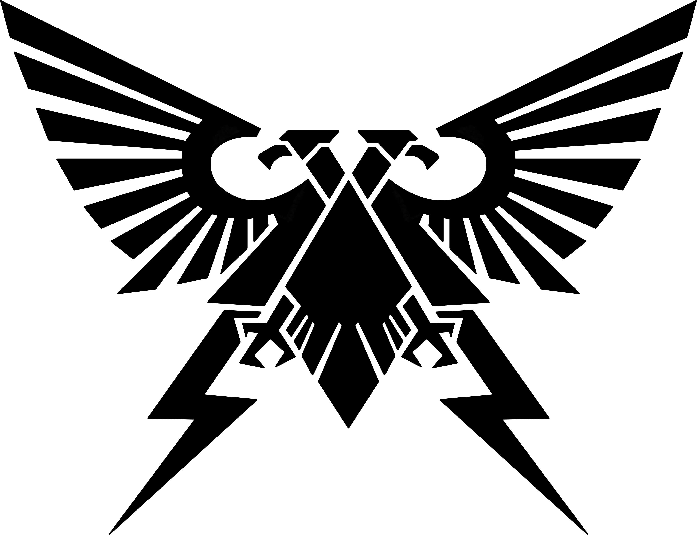

<!DOCTYPE html>
<html lang="en"></html>
<head>
<meta charset="UTF-8">
<link rel="stylesheet" href="Round2.css">
<title>Jeopardy! Warhammer Edition!</title>
</head>


<body style="background-color:#070c1d">
<div class="bigBox" id="fullContainer">

    <div class="bigBox" id="categories">
        <div class="smallBox" id="cat1">Sigma Balls</div>
        <div class="smallBox" id="cat2">40k Souls-Like</div>
        <div class="smallBox" id="cat3">Thems The Rules</div>
        <div class="smallBox" id="cat4">Quotes</div>
        <div class="smallBox" id="cat5">That Horus And His Heresy</div>
        <div class="smallBox" id="cat6">Don't Be So Stingy</div>
    </div>
    <div class="bigBox" id="questions">
        <div class="column" id="column1">
            <button data-modal-target='#modal' class="question" id="col1Q1" 
            onclick="changeModel(sigmaBalls.category,sigmaBalls.question1,sigmaBalls.points1),pointsChange(this)">200</button>
            <button data-modal-target='#modal' class="question" id="col1Q2"
            onclick="changeModel(sigmaBalls.category,sigmaBalls.question2,sigmaBalls.points2),pointsChange(this)">400</button>
            <button data-modal-target='#modal' class="question" id="col1Q3"
            onclick="changeModel(sigmaBalls.category,sigmaBalls.question3,sigmaBalls.points3),pointsChange(this)">600</button>
            <button data-modal-target='#modal' class="question" id="col1Q4"
            onclick="changeModel(sigmaBalls.category,sigmaBalls.question4,sigmaBalls.points4),pointsChange(this)">800</button>
            <button data-modal-target='#modal' class="question" id="col1Q5"
            onclick="changeModel(sigmaBalls.category,sigmaBalls.question5,sigmaBalls.points5),pointsChange(this)">1000</button>
            
        </div>
        <div class="column" id="column2">
            <button data-modal-target='#modal' class="question" id="col2Q1"
            onclick="changeModel(soulsLike.category,soulsLike.question1,soulsLike.points1),pointsChange(this)">200</button>
            <button data-modal-target='#modal' class="question" id="col2Q2"
            onclick="changeModel(soulsLike.category,soulsLike.question2,soulsLike.points2),pointsChange(this)">400</button>
            <button data-modal-target='#modal' class="question" id="col2Q3"
            onclick="changeModel(soulsLike.category,soulsLike.question3,soulsLike.points3),pointsChange(this)">600</button>
            <button data-modal-target='#modal' class="question" id="col2Q4"
            onclick="changeModel(soulsLike.category,soulsLike.question4,soulsLike.points4),pointsChange(this)">800</button>
            <button data-modal-target='#modal' class="question" id="col2Q5"
            onclick="changeModel(soulsLike.category,soulsLike.question5,soulsLike.points5),pointsChange(this)">1000</button>
            
        </div>
        <div class="column" id="column3">
            <button data-modal-target='#modal' class="question" id="col3Q1"
            onclick="changeModel(theRules.category,theRules.question1,theRules.points1),pointsChange(this)">200</button>
            <button data-modal-target='#modal' class="question" id="col3Q2"
            onclick="changeModel(theRules.category,theRules.question2,theRules.points2),pointsChange(this)">400</button>
            <button data-modal-target='#modal' class="question" id="col3Q3"
            onclick="changeModel(theRules.category,theRules.question3,theRules.points3),pointsChange(this)">600</button>
            <button data-modal-target='#modal' class="question" id="col3Q4"
            onclick="changeModel(theRules.category,theRules.question4,theRules.points4),pointsChange(this)">800</button>
            <button data-modal-target='#modal' class="question" id="col3Q5"
            onclick="changeModel(theRules.category,theRules.question5,theRules.points5),pointsChange(this)">1000</button>
            
        </div>
        <div class="column" id="column4">
            <button data-modal-target='#modal' class="question" id="col4Q1"
            onclick="changeModel(quotes.category,quotes.question1,quotes.points1),pointsChange(this)">200</button>
            <button data-modal-target='#modal' class="question" id="col4Q2"
            onclick="changeModel(quotes.category,quotes.question2,quotes.points2),pointsChange(this)">400</button>
            <button data-modal-target='#modal' class="question" id="col4Q3"
            onclick="changeModel(quotes.category,quotes.question3,quotes.points3),pointsChange(this)">600</button>
            <button data-modal-target='#modal' class="question" id="col4Q4"
            onclick="changeModel(quotes.category,quotes.question4,quotes.points4),pointsChange(this)">800</button>
            <button data-modal-target='#modal' class="question" id="col4Q5"
            onclick="changeModel(quotes.category,quotes.question5,quotes.points5),pointsChange(this)">1000</button>
            
        </div>
        <div class="column" id="column5">
            <button data-modal-target='#modal' class="question" id="col5Q1"
            onclick="changeModel(horusHeresy.category,horusHeresy.question1,horusHeresy.points1),pointsChange(this)">200</button>
            <button data-modal-target='#modal' class="question" id="col5Q2"
            onclick="changeModel(horusHeresy.category,horusHeresy.question2,horusHeresy.points2),pointsChange(this)">400</button>
            <button data-modal-target='#modal' class="question" id="col5Q3"
            onclick="changeModel(horusHeresy.category,horusHeresy.question3,horusHeresy.points3),pointsChange(this)">600</button>
            <button data-modal-target='#modal' class="question" id="col5Q4"
            onclick="changeModel(horusHeresy.category,horusHeresy.question4,horusHeresy.points4),pointsChange(this)">800</button>
            <button data-modal-target='#modal' class="question" id="col5Q5"
            onclick="changeModel(horusHeresy.category,horusHeresy.question5,horusHeresy.points5),pointsChange(this)">1000</button>
            
        </div>
        <div class="column" id="column6">
            <button data-modal-target='#modal' class="question" id="col6Q1"
            onclick="changeModel(stingy.category,stingy.question1,stingy.points1),pointsChange(this)">200</button>
            <button data-modal-target='#modal' class="question" id="col6Q2"
            onclick="changeModel(stingy.category,stingy.question2,stingy.points2),pointsChange(this)">400</button>
            <button data-modal-target='#modal' class="question" id="col6Q3"
            onclick="changeModel(stingy.category,stingy.question3,stingy.points3),pointsChange(this)">600</button>
            <button data-modal-target='#modal' class="question" id="col6Q4"
            onclick="changeModel(stingy.category,stingy.question4,stingy.points4),pointsChange(this)">800</button>
            <button data-modal-target='#modal' class="question" id="col6Q5"
            onclick="changeModel(stingy.category,stingy.question5,stingy.points5),pointsChange(this)">1000</button>
            
        </div>
    </div>


    <!-- put  data-modal-target='#modal'  in button to target specific modal -->
    <div class="questionModal" id="modal">
        
        <div class="frame" id="frameTopLeft"></img></div>
        <div class="frame" id="frameTopRight"></img></div>
        <div class="frame" id="frameTopCenter"></img></div>
        <div class="questionHead">
            <div class="questionCateg" id="catMod">This is the Category of the question</div>
            <button data-close-button class="close-button">&times;</button>
        </div>
        <div class="questionFull">
            <div id="questMod">This is the Question of the question</div>
        </div>
        <div class="questionFoot">
            <button class="resultButton" id="qCorrect" onclick="answerCount(),closeModal(modal)">NEXT</button>
            <div id="questPoints"></div>
        </div>
        </img>
        </img>
        </img>
    </div>

    <div id="overlay"></div>
    <button id="nextRoundBtn" onclick="changeButton()">Next Round?</button></div>
</div>
<script>

const openQuestionButton = document.querySelectorAll('[data-modal-target]');
const closeQuestionButton = document.querySelectorAll('[data-close-button]');
const overlay = document.getElementById('overlay');

openQuestionButton.forEach(button => {
    button.addEventListener('click', () => {
        const modal = document.querySelector(button.dataset.modalTarget)
        openModal(modal)
    })
})

overlay.addEventListener('click', () => {
    const modals = document.querySelectorAll('.questionModal.active')
    modals.forEach(modal => {
        //closeModal(modal);
    })
})

closeQuestionButton.forEach(button => {
    button.addEventListener('click', () => {
        const modal = button.closest('.questionModal')
        closeModal(modal)
    })
})


function openModal(modal) {
    if (modal == null) return
    modal.classList.add('active')
    overlay.classList.add('active')
}

function closeModal(modal) {
    if (modal == null) return
    modal.classList.remove('active')
    overlay.classList.remove('active')
}

const catMod = document.getElementById('catMod');
const questMod = document.getElementById('questMod')
const questPoints = document.getElementById('questPoints');
const changeModel = function(category,question,points){
    catMod.innerHTML = category;
    questMod.innerHTML = question;
    questPoints.innerHTML = points;
};

function pointsChange(element){
    console.log(element.innerHTML);
    const points = element.innerHTML;
    if(element.innerHTML){
        element.innerHTML = '';
    } else if (element.innerHTML == ''){
        element.innerHTML = points;
    }
}
const nextRoundBtn = document.getElementById('nextRoundBtn');
function changeButton(){
    window.location.href = 'FinalRound.html'
}
let answerCounter = 0;
function answerCount(){
    answerCounter+=1;
    console.log(answerCounter);
    if(answerCounter==30){
        nextRoundBtn.style.visibility='visible';
    }
}

//audio playing function
function playAudio(file){
    new Audio(file).play();
}


//objects for all categories
const sigmaBalls = {category: `Sigma Balls`,
question1: `Before the Mortal Realms, at the end of the World-That-Was, the majority of Aelven souls were consumed by this Chaos God.`, answer1: `Slaanesh`, points1: `200`,
question2: `In Age of Sigmar, the Gargant faction is named as the Sons of this legendary giant.`, answer2: `Behemat`, points2: `400`,
question3: `Queekish words are short, clipped, and often repeated several times in a row for emphasis, and also the language of this race.`, answer3: `Skaven`, points3: `600`,
question4: `The Fyreslayers consider this particularly fiery dwarf to be their warrior god reborn.`, answer4: `Gotrek Gurnisson`, points4: `800`,
question5: `Of the Order of Azyr, these hardened trackers seek to root out the taint of Chaos in Sigmar's name.`, answer5: `Witch Hunter`, points5: `1000`,
}
const soulsLike = {category: `40k Souls-Like`,
question1: `Slaves captured by the Night Lords First Claw are named in sequential order, their seventh and most legendary slave being named this.`, answer1: `Septimus`, points1: `200`,
question2: `Although most (if not all) legions possess the ability to use it, the Night Lords like to announce their use of this visual enhancing technology.`, answer2: `Prey Sight`, points2: `400`,
question3: `Talos Valcoran, the Soul Hunter and member of First Claw 10th Company Night Lords, originally held this battlefield role.`, answer3: `Apothecary`, points3: `600`,
question4: `This Callidus Assassin is the only mortal to successfully kill a Primarch, albeit a suicidal one.`, answer4: `M'Shen`, points4: `800`,
question5: `The creature known as 'The Exalted' assumed the position of Captain of the First Claw after this happened to their previous Captain, Malcharion.`, answer5: `Interred in a Dreadnought`, points5: `1000`,
}
const theRules = {category: `Thems The Rules`,
question1: `Contrary to popular belief, this phase actually follows immediately AFTER the Movement Phase.`, answer1: `Psychic Phase`, points2: `400`,
question2: `Command Re-roll is allowed for the following, with the exception of one: Hits, Wounds, Morale, Damage, Deny the Witch, and Number-of-Attacks.`, answer2: `Morale`, points1: `200`,
question3: `When measuring in Kill Team 2e, the circle denotes this length in inches.`, answer3: `2"`, points3: `600`,
question4: `In Crusade, the combined Power Ratings of all the units in the force cannot exceed this.`, answer4: `Supply Limit`, points4: `800`,
question5: `Thin Their Ranks, Attrition, and First Strike are all examples of this category of secondary objectives in Matched Play.`, answer5: `No Mercy, No Respite`, points5: `1000`,
}
const quotes = {category: `Quotes`,
question1: '<button class="soundButton" id="imgSource" onclick="playAudio(quotes.audio1)" ></button>', audio1: `Sounds/Vulkan.mp3`, answer1: `Vulkan`, points1: `200`,
question2: '<button class="soundButton" id="imgSource" onclick="playAudio(quotes.audio2)" ></button>', audio2: `Sounds/Trazyn.mp3`, answer2: `Trazyn`, points2: `400`,
question3: '<button class="soundButton" id="imgSource" onclick="playAudio(quotes.audio3)" ></button>', audio3: `Sounds/James Workshop.mp3`, answer3: `James Workshop`, points3: `600`,
question4: '<button class="soundButton" id="imgSource" onclick="playAudio(quotes.audio4)" ></button>', audio4: `Sounds/Magos.mp3`, answer4: `Magos Dominus Reditus, Senior Tech Priest`, points4: `800`,
question5: '<button class="soundButton" id="imgSource" onclick="playAudio(quotes.audio5)" ></button>', audio5: `Sounds/Abbadon.mp3`, answer5: `Abaddon`, points5: `1000`,
}
const horusHeresy = {category: `That Horus And His Heresy`,
question1: `The betrayal on Isstvan V really made this Loyalist Primarch lose his mind.`, answer1: `Ferrus Manus`, points1: `200`,
question2: `Jovial companion to Garviel Loken of the Luna Wolves, this Mournival member introduced Loken to the warrior lodges.`, answer2: `Tarik Torgaddon`, points1: `200`,
question3: `An artist, historian or journalist, these Imperial citizens had the job of recording events during the Great Crusade.`, answer3: `Remembrancer`, points3: `600`,
question4: `Fabricator-General turned traitor, this ally to Horus was the leader of the Dark Mechanicum.`, answer4: `Kelbor-Hal`, points4: `800`,
question5: `On the Plague Moon of the feral world Davin, Horus Lupercal was gravely wounded by accursed this blade.`, answer5: `Anathame`, points5: `1000`,
}
const stingy = {category: `Don't be So Stingy`,
question1: `A standard Combat Patrol box costs this much.`, answer1: `$150`, points1: `200`,
question2: `A special army box set on release typically sells for this much.`, answer2: `$200`, points2: `400`,
question3: `A standard Space Marine character model, like a Primaris Lt. with Power Sword or Primaris Lt. in Reiver Armour, sells for this much.`, answer3: `$35`, points3: `600`,
question4: `A single pair of Citadel Tools brand Super Fine Detail Cutters sell for this much.`, answer4: `$50`, points4: `800`,
question5: `A Mars Pattern Warlord Titan with a head, a body, shoulder mounted Titan Laser Blasters, Ariorch Power Claw, and Quake Cannon costs this much.`, answer5: `$2,423`, points5: `1000`,
}


</script>
</body>